BIO 004 · Human Anatomy · Urinary System
Renal Anatomy
The kidney from its external layers to the nephron, its blood supply and the juxtaglomerular apparatus, then the ureters, bladder, and urethra. Reproduced from Dr. Rennie's lecture to match the recorded videos.
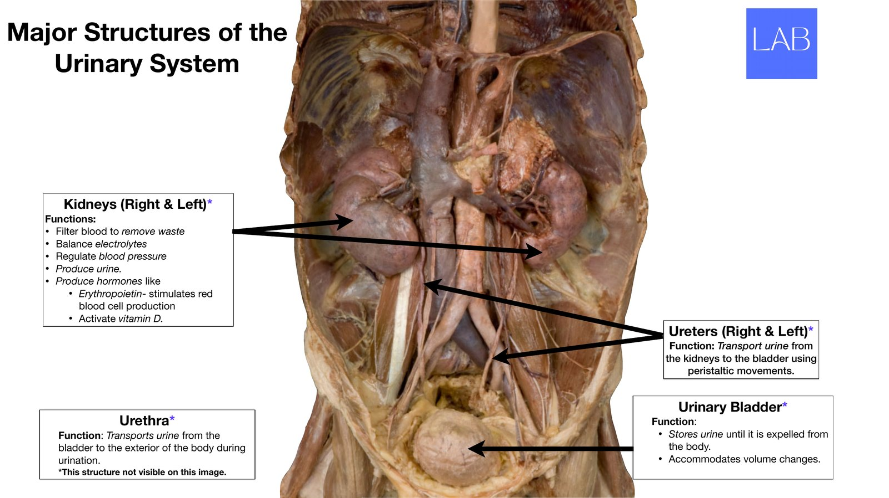
Major Structures of the Urinary System Kidneys (Right & Left)* Functions: • Filter blood to remove waste • Balance electrolytes • Regulate blood pressure • Produce urine. • Produce hormones like • Erythropoietin- stimulates red blood cell production • Activate vitamin D. Ureters (Right & Left)* Function: Transport urine from the kidneys to the bladder using peristaltic movements. Urinary Bladder* Urethra* Function: Function: Transports urine from the • Stores urine until it is expelled from bladder to the exterior of the body during the body. urination. • Accommodates volume changes. *This structure not visible on this image.
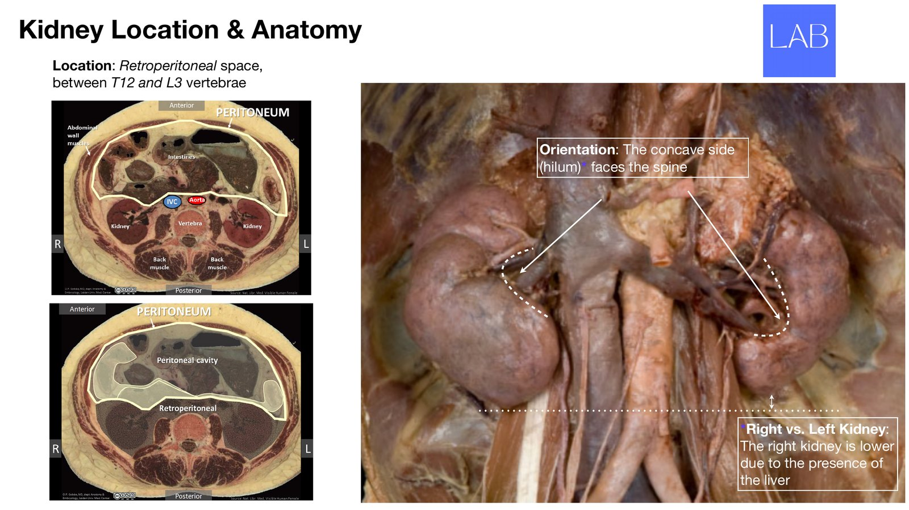
Kidney Location & Anatomy Location: Retroperitoneal space, between T12 and L3 vertebrae Orientation: The concave side (hilum)* faces the spine *Right vs. Left Kidney: The right kidney is lower due to the presence of the liver
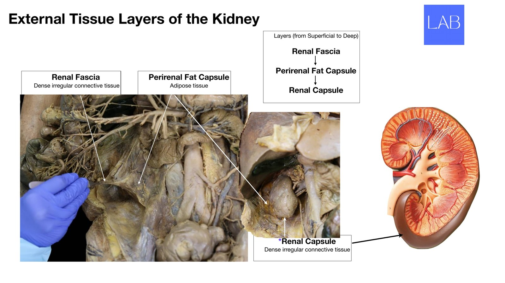
External Tissue Layers of the Kidney Layers (from Super cial to Deep) Renal Fascia Perirenal Fat Capsule Renal Fascia Perirenal Fat Capsule Dense irregular connective tissue Adipose tissue Renal Capsule *Renal Capsule Dense irregular connective tissue fi
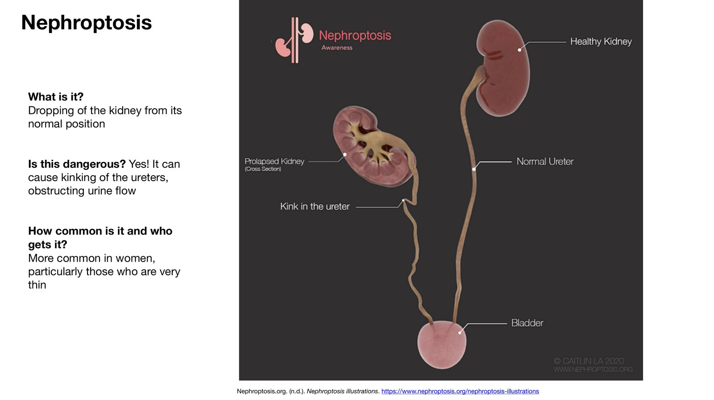
Nephroptosis What is it? Dropping of the kidney from its normal position Is this dangerous? Yes! It can cause kinking of the ureters, obstructing urine ow How common is it and who gets it? More common in women, particularly those who are very thin Nephroptosis.org. (n.d.). Nephroptosis illustrations. https://www.nephroptosis.org/nephroptosis-illustrations fl
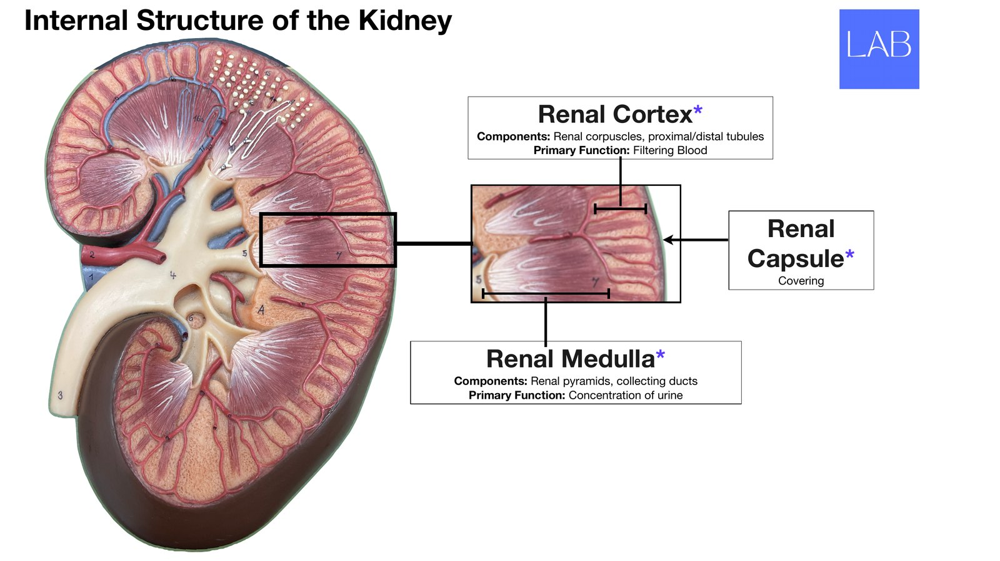
Internal Structure of the Kidney Renal Cortex* Components: Renal corpuscles, proximal/distal tubules Primary Function: Filtering Blood Renal Capsule* Covering Renal Medulla* Components: Renal pyramids, collecting ducts Primary Function: Concentration of urine
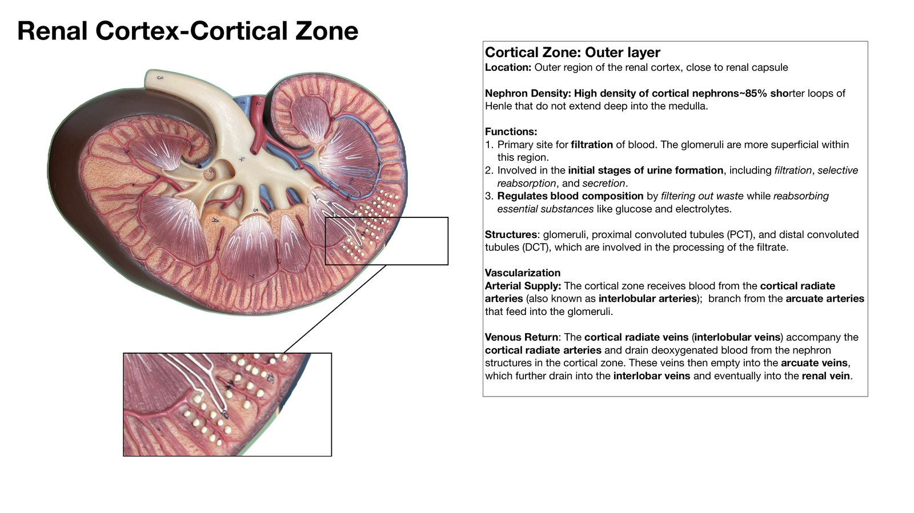
Renal Cortex-Cortical Zone Cortical Zone: Outer layer Location: Outer region of the renal cortex, close to renal capsule Nephron Density: High density of cortical nephrons~85% shorter loops of Henle that do not extend deep into the medulla. Functions: 1. Primary site for ltration of blood. The glomeruli are more super cial within this region. 2. Involved in the initial stages of urine formation, including ltration, selective reabsorption, and secretion. 3. Regulates blood composition by ltering out waste while reabsorbing essential substances like glucose and electrolytes. Structures: glomeruli, proximal convoluted tubules (PCT), and distal convoluted tubules (DCT), which are involved in the processing of the ltrate. Vascularization Arterial Supply: The cortical zone receives blood from the cortical radiate arteries (also known as interlobular arteries); branch from the arcuate arteries that feed into the glomeruli. Venous Return: The cortical radiate veins (interlobular veins) accompany the cortical radiate arteries and drain deoxygenated blood from the nephron structures in the cortical zone. These veins then empty into the arcuate veins, which further drain into the interlobar veins and eventually into the renal vein. fi fi fi fi fi
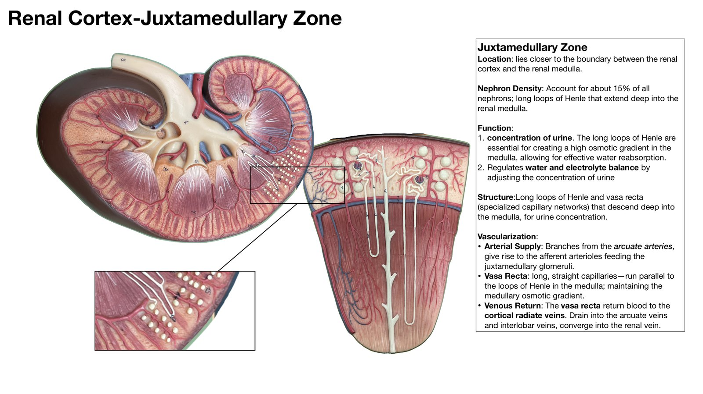
Renal Cortex-Juxtamedullary Zone Juxtamedullary Zone Location: lies closer to the boundary between the renal cortex and the renal medulla. Nephron Density: Account for about 15% of all nephrons; long loops of Henle that extend deep into the renal medulla. Function: 1. concentration of urine. The long loops of Henle are essential for creating a high osmotic gradient in the medulla, allowing for e ective water reabsorption. 2. Regulates water and electrolyte balance by adjusting the concentration of urine Structure:Long loops of Henle and vasa recta (specialized capillary networks) that descend deep into the medulla, for urine concentration. Vascularization: • Arterial Supply: Branches from the arcuate arteries, give rise to the a erent arterioles feeding the juxtamedullary glomeruli. • Vasa Recta: long, straight capillaries-run parallel to the loops of Henle in the medulla; maintaining the medullary osmotic gradient. • Venous Return: The vasa recta return blood to the cortical radiate veins. Drain into the arcuate veins and interlobar veins, converge into the renal vein. ff ff
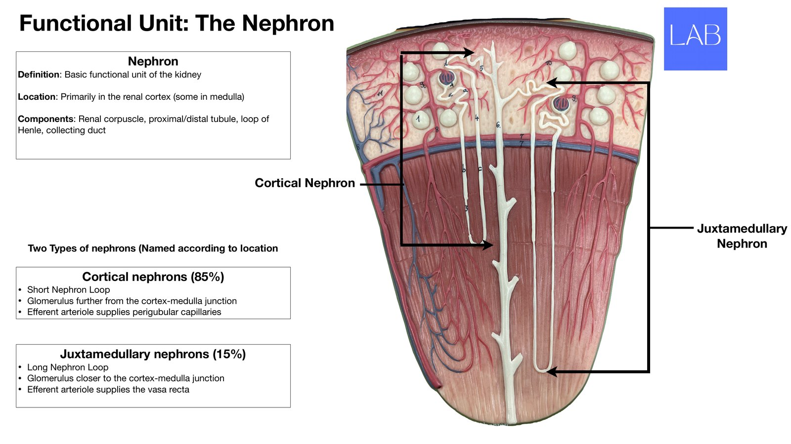
Functional Unit: The Nephron Nephron De nition: Basic functional unit of the kidney Location: Primarily in the renal cortex (some in medulla) Components: Renal corpuscle, proximal/distal tubule, loop of Henle, collecting duct Cortical Nephron Juxtamedullary Two Types of nephrons (Named according to location Nephron Cortical nephrons (85%) • Short Nephron Loop • Glomerulus further from the cortex-medulla junction • E erent arteriole supplies perigubular capillaries Juxtamedullary nephrons (15%) • Long Nephron Loop • Glomerulus closer to the cortex-medulla junction • E erent arteriole supplies the vasa recta ff ff fi
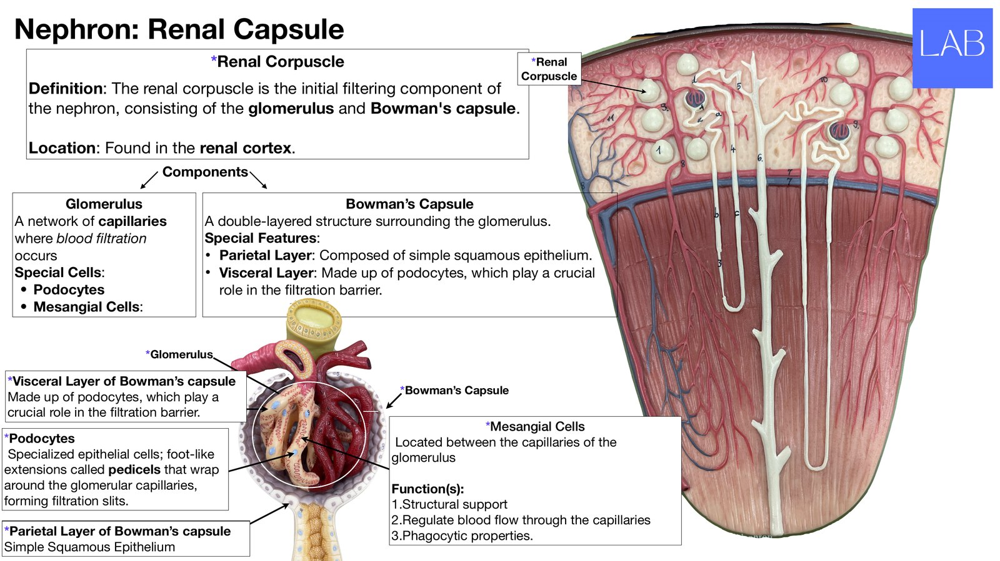
Nephron: Renal Capsule *Renal Corpuscle *Renal Corpuscle De nition: The renal corpuscle is the initial ltering component of the nephron, consisting of the glomerulus and Bowman's capsule. Location: Found in the renal cortex. Components Glomerulus Bowman’s Capsule A network of capillaries A double-layered structure surrounding the glomerulus. where blood ltration Special Features: occurs • Parietal Layer: Composed of simple squamous epithelium. Special Cells: • Visceral Layer: Made up of podocytes, which play a crucial • Podocytes role in the ltration barrier. • Mesangial Cells: *Glomerulus *Visceral Layer of Bowman’s capsule *Bowman’s Capsule Made up of podocytes, which play a crucial role in the ltration barrier. *Mesangial Cells *Podocytes Located between the capillaries of the Specialized epithelial cells; foot-like glomerulus extensions called pedicels that wrap around the glomerular capillaries, Function(s): forming ltration slits. 1.Structural support 2.Regulate blood ow through
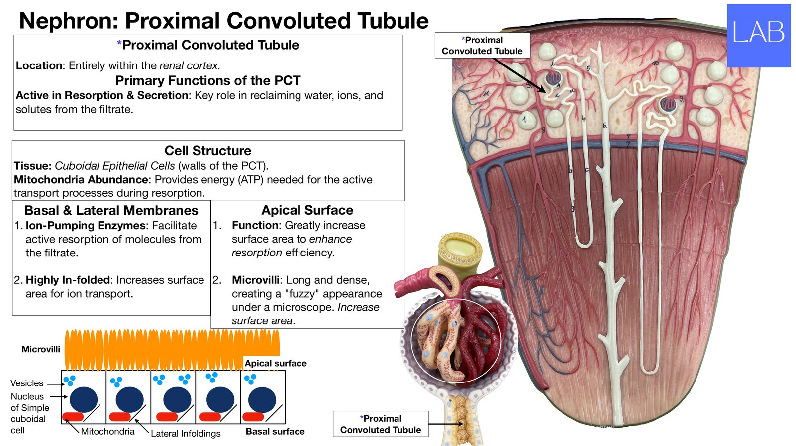
Nephron: Proximal Convoluted Tubule *Proximal *Proximal Convoluted Tubule Convoluted Tubule Location: Entirely within the renal cortex. Primary Functions of the PCT Active in Resorption & Secretion: Key role in reclaiming water, ions, and solutes from the ltrate. Cell Structure Tissue: Cuboidal Epithelial Cells (walls of the PCT). Mitochondria Abundance: Provides energy (ATP) needed for the active transport processes during resorption. Basal & Lateral Membranes Apical Surface 1. Ion-Pumping Enzymes: Facilitate 1. Function: Greatly increase active resorption of molecules from surface area to enhance the ltrate. resorption e ciency. 2. Highly In-folded: Increases surface 2. Microvilli: Long and dense, area for ion transport. creating a "fuzzy" appearance under a microscope. Increase surface area. Microvilli Apical surface Vesicles Nucleus of Simple cuboidal *Proximal cell Mitochondria Lateral Infoldings Basal surface Convoluted Tubule fi ffi fi
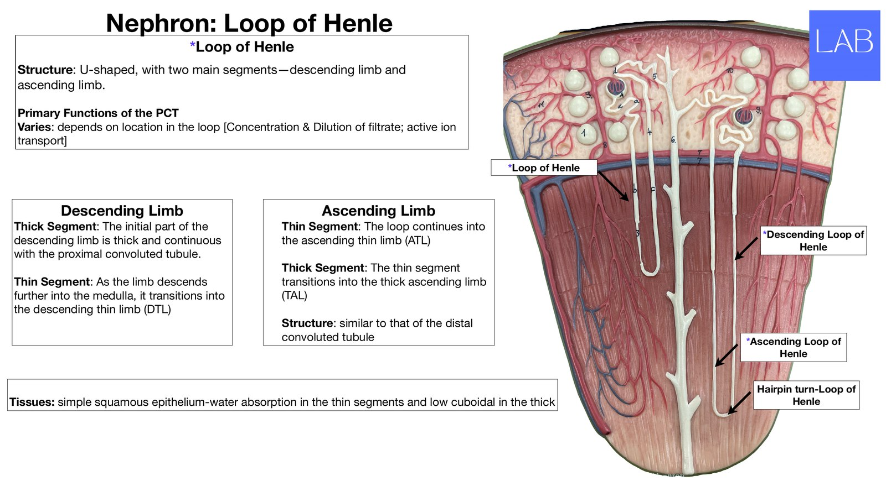
Nephron: Loop of Henle *Loop of Henle Structure: U-shaped, with two main segments-descending limb and ascending limb. Primary Functions of the PCT Varies: depends on location in the loop [Concentration & Dilution of ltrate; active ion transport] *Loop of Henle Descending Limb Ascending Limb Thick Segment: The initial part of the Thin Segment: The loop continues into *Descending Loop of descending limb is thick and continuous the ascending thin limb (ATL) Henle with the proximal convoluted tubule. Thick Segment: The thin segment Thin Segment: As the limb descends transitions into the thick ascending limb further into the medulla, it transitions into (TAL) the descending thin limb (DTL) Structure: similar to that of the distal convoluted tubule *Ascending Loop of Henle Hairpin turn-Loop of Tissues: simple squamous epithelium-water absorption in the thin segments and low cuboidal in the thick Henle fi
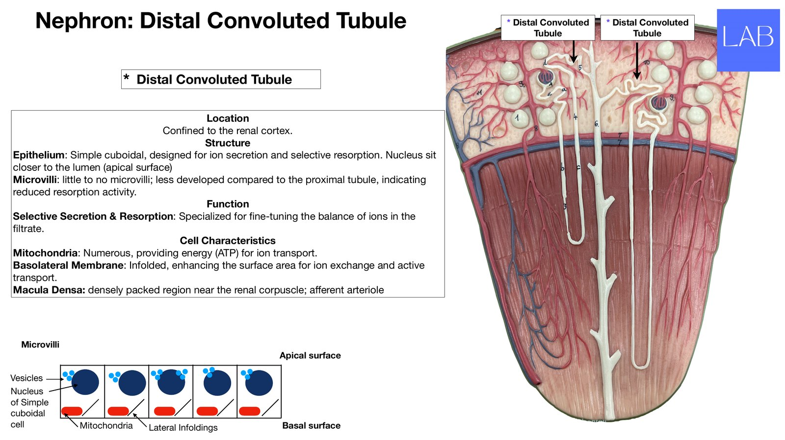
Nephron: Distal Convoluted Tubule * Distal Convoluted Tubule * Distal Convoluted Tubule * Distal Convoluted Tubule Location Con ned to the renal cortex. Structure Epithelium: Simple cuboidal, designed for ion secretion and selective resorption. Nucleus sit closer to the lumen (apical surface) Microvilli: little to no microvilli; less developed compared to the proximal tubule, indicating reduced resorption activity. Function Selective Secretion & Resorption: Specialized for ne-tuning the balance of ions in the ltrate. Cell Characteristics Mitochondria: Numerous, providing energy (ATP) for ion transport. Basolateral Membrane: Infolded, enhancing the surface area for ion exchange and active transport. Macula Densa: densely packed region near the renal corpuscle; a erent arteriole Microvilli Apical surface Vesicles Nucleus of Simple cuboidal cell Mitochondria Lateral Infoldings Basal surface fi fi fi ff
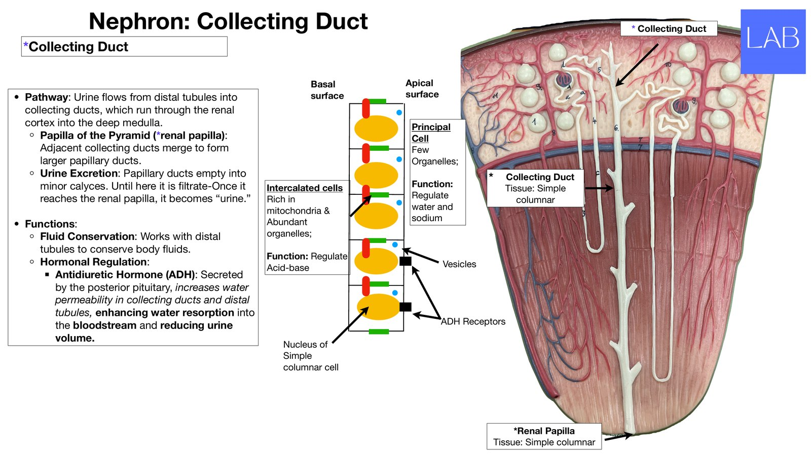
Nephron: Collecting Duct * Collecting Duct *Collecting Duct Basal Apical • Pathway: Urine ows from distal tubules into surface surface collecting ducts, which run through the renal cortex into the deep medulla. Principal ◦ Papilla of the Pyramid (*renal papilla): Cell Adjacent collecting ducts merge to form Few larger papillary ducts. Organelles; ◦ Urine Excretion: Papillary ducts empty into * Collecting Duct minor calyces. Until here it is ltrate-Once it Intercalated cells Function: Tissue: Simple reaches the renal papilla, it becomes “urine.” Rich in Regulate columnar mitochondria & water and Abundant sodium • Functions: ◦ Fluid Conservation: Works with distal organelles; tubules to conserve body uids. Function: Regulate ◦ Hormonal Regulation: Acid-base Vesicles ▪ Antidiuretic Hormone (ADH): Secreted by the posterior pituitary, increases water permeability in collecting ducts and distal tubules, enhancing water resorption into the bloodstrea
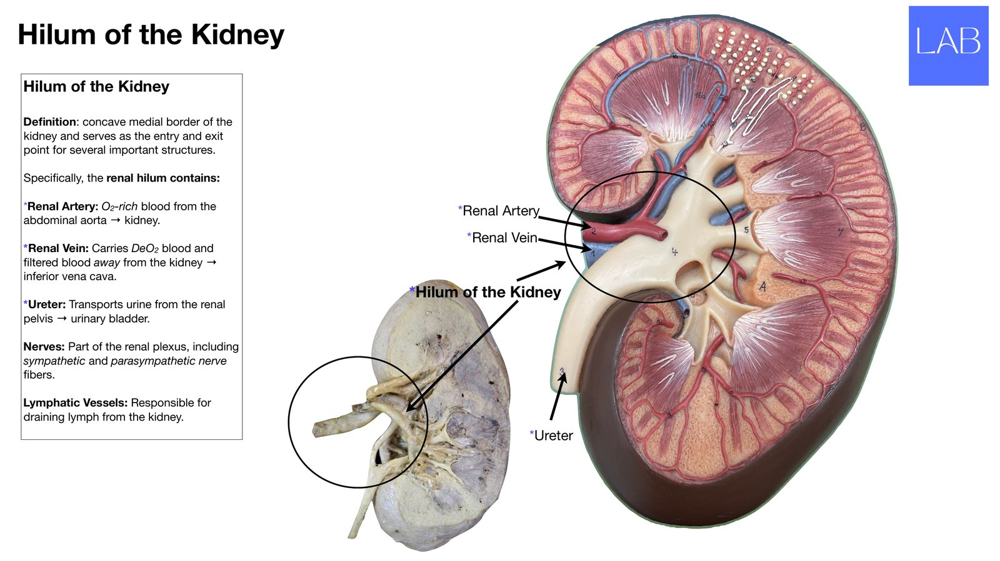
Hilum of the Kidney Hilum of the Kidney De nition: concave medial border of the kidney and serves as the entry and exit point for several important structures. Speci cally, the renal hilum contains: *Renal Artery: O2-rich blood from the *Renal Artery abdominal aorta → kidney. *Renal Vein *Renal Vein: Carries DeO2 blood and ltered blood away from the kidney → inferior vena cava. *Hilum of the Kidney *Ureter: Transports urine from the renal pelvis → urinary bladder. Nerves: Part of the renal plexus, including sympathetic and parasympathetic nerve bers. Lymphatic Vessels: Responsible for draining lymph from the kidney. *Ureter fi fi fi fi
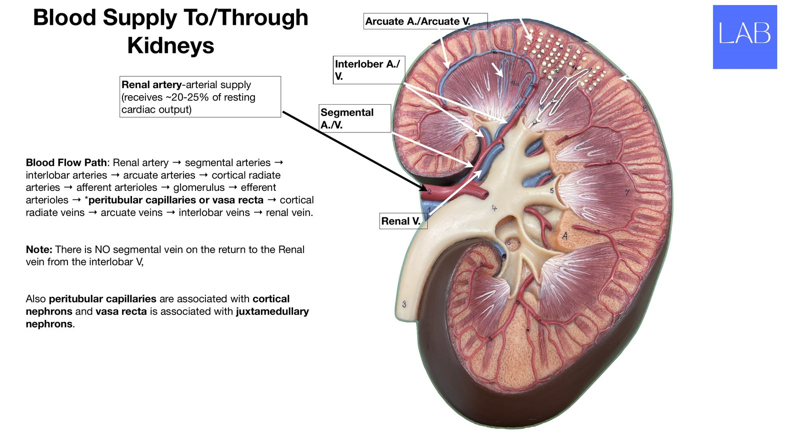
Blood Supply To/Through Arcuate A./Arcuate V. Cortical Kidneys Vasa Interlober A./ V. Recta Peritubular Renal artery-arterial supply (receives ~20-25% of resting cardiac output) Segmental A./V. Blood Flow Path: Renal artery → segmental arteries → interlobar arteries → arcuate arteries → cortical radiate arteries → a erent arterioles → glomerulus → e erent arterioles → *peritubular capillaries or vasa recta → cortical radiate veins → arcuate veins → interlobar veins → renal vein. Renal V. Note: There is NO segmental vein on the return to the Renal vein from the interlobar V, Also peritubular capillaries are associated with cortical nephrons and vasa recta is associated with juxtamedullary nephrons. ff ff
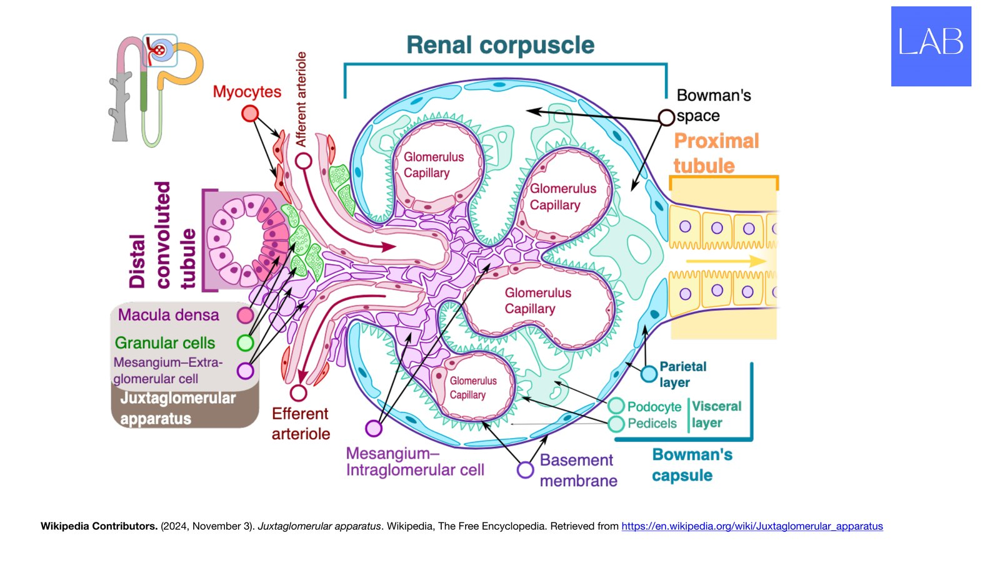
Wikipedia Contributors. (2024, November 3). Juxtaglomerular apparatus. Wikipedia, The Free Encyclopedia. Retrieved from https://en.wikipedia.org/wiki/Juxtaglomerular_apparatus
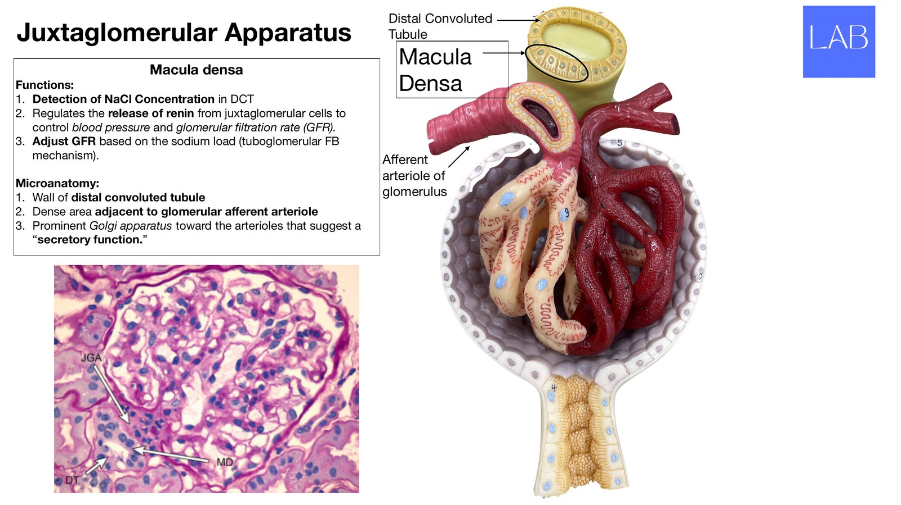
Distal Convoluted Juxtaglomerular Apparatus Tubule Macula densa Macula Functions: Densa 1. Detection of NaCl Concentration in DCT 2. Regulates the release of renin from juxtaglomerular cells to control blood pressure and glomerular ltration rate (GFR). 3. Adjust GFR based on the sodium load (tuboglomerular FB mechanism). A erent arteriole of Microanatomy: 1. Wall of distal convoluted tubule glomerulus 2. Dense area adjacent to glomerular a erent arteriole 3. Prominent Golgi apparatus toward the arterioles that suggest a “secretory function.” ff ff fi
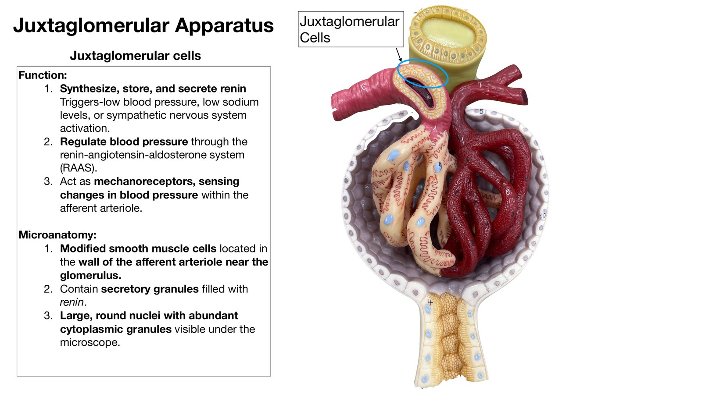
Juxtaglomerular Apparatus Juxtaglomerular Cells Juxtaglomerular cells Function: 1. Synthesize, store, and secrete renin Triggers-low blood pressure, low sodium levels, or sympathetic nervous system activation. 2. Regulate blood pressure through the renin-angiotensin-aldosterone system (RAAS). 3. Act as mechanoreceptors, sensing changes in blood pressure within the a erent arteriole. Microanatomy: 1. Modi ed smooth muscle cells located in the wall of the a erent arteriole near the glomerulus. 2. Contain secretory granules lled with renin. 3. Large, round nuclei with abundant cytoplasmic granules visible under the microscope. ff fi ff fi
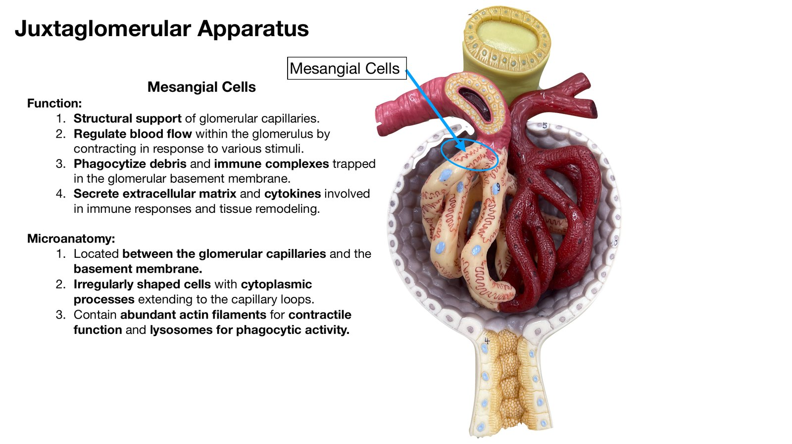
Juxtaglomerular Apparatus Mesangial Cells Mesangial Cells Function: 1. Structural support of glomerular capillaries. 2. Regulate blood ow within the glomerulus by contracting in response to various stimuli. 3. Phagocytize debris and immune complexes trapped in the glomerular basement membrane. 4. Secrete extracellular matrix and cytokines involved in immune responses and tissue remodeling. Microanatomy: 1. Located between the glomerular capillaries and the basement membrane. 2. Irregularly shaped cells with cytoplasmic processes extending to the capillary loops. 3. Contain abundant actin laments for contractile function and lysosomes for phagocytic activity. fl fi
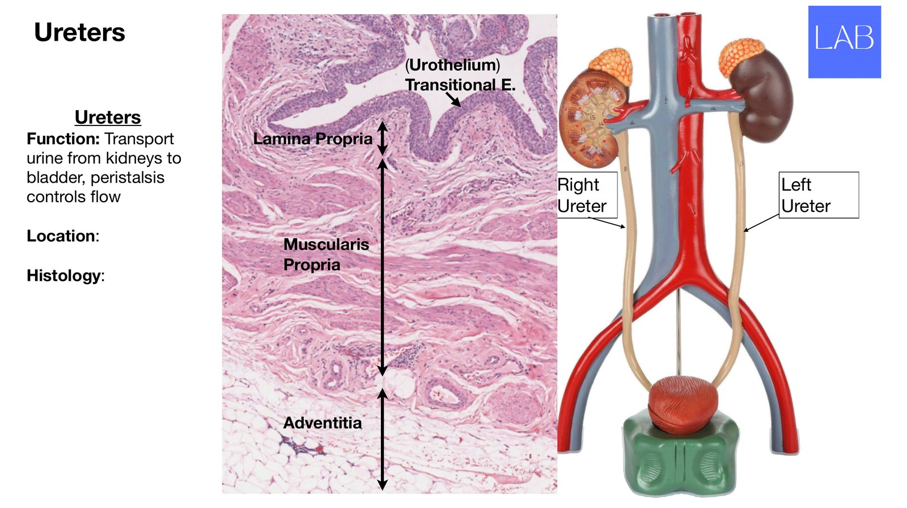
Ureters (Urothelium) Transitional E. Ureters Function: Transport Lamina Propria urine from kidneys to bladder, peristalsis Right Left controls ow Ureter Ureter Location: Muscularis Propria Histology: Adventitia fl
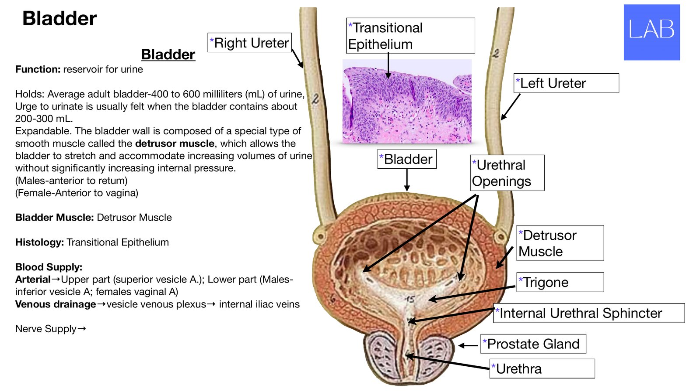
Bladder *Transitional *Right Ureter Epithelium Bladder Function: reservoir for urine *Left Ureter Holds: Average adult bladder-400 to 600 milliliters (mL) of urine, Urge to urinate is usually felt when the bladder contains about 200-300 mL. Expandable. The bladder wall is composed of a special type of smooth muscle called the detrusor muscle, which allows the bladder to stretch and accommodate increasing volumes of urine *Bladder without signi cantly increasing internal pressure. *Urethral (Males-anterior to retum) Openings (Female-Anterior to vagina) Bladder Muscle: Detrusor Muscle Histology: Transitional Epithelium *Detrusor Muscle Blood Supply: Arterial→Upper part (superior vesicle A.); Lower part (Males- *Trigone inferior vesicle A; females vaginal A) Venous drainage→vesicle venous plexus→ internal iliac veins *Internal Urethral Sphincter Nerve Supply→ *Prostate Gland *Urethra fi
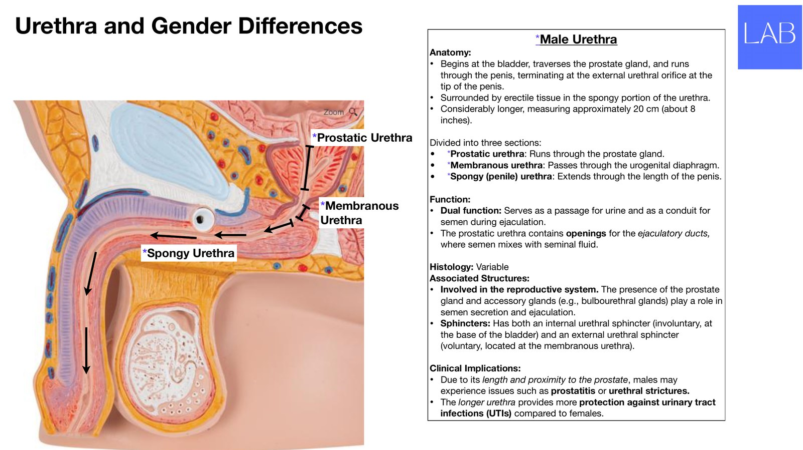
Urethra and Gender Di erences *Male Urethra Anatomy: • Begins at the bladder, traverses the prostate gland, and runs through the penis, terminating at the external urethral ori ce at the tip of the penis. • Surrounded by erectile tissue in the spongy portion of the urethra. • Considerably longer, measuring approximately 20 cm (about 8 inches). *Prostatic Urethra Divided into three sections: • *Prostatic urethra: Runs through the prostate gland. • *Membranous urethra: Passes through the urogenital diaphragm. • *Spongy (penile) urethra: Extends through the length of the penis. Function: *Membranous • Dual function: Serves as a passage for urine and as a conduit for Urethra semen during ejaculation. • The prostatic urethra contains openings for the ejaculatory ducts, where semen mixes with seminal uid. *Spongy Urethra Histology: Variable Associated Structures: • Involved in the reproductive system. The presence of the prostate gland and accessory glands (e.g., bulbourethral glands) play a role in semen secretion and ejaculation. • Sphincters: Has both an internal urethral sphincter (involuntary, at the base of the bladder) and an external urethral sphincter (voluntary, located at the membranous urethra). Clinical Implications: • Due to its length and proximity to the prostate, males may experience issu
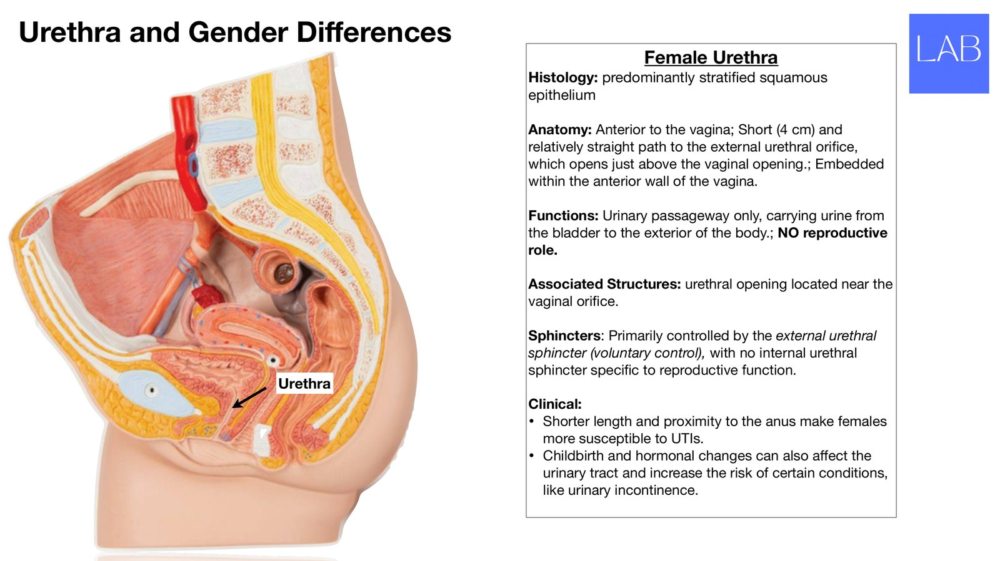
Urethra and Gender Di erences Female Urethra Histology: predominantly strati ed squamous epithelium Anatomy: Anterior to the vagina; Short (4 cm) and relatively straight path to the external urethral ori ce, which opens just above the vaginal opening.; Embedded within the anterior wall of the vagina. Functions: Urinary passageway only, carrying urine from the bladder to the exterior of the body.; NO reproductive role. Associated Structures: urethral opening located near the vaginal ori ce. Sphincters: Primarily controlled by the external urethral sphincter (voluntary control), with no internal urethral sphincter speci c to reproductive function. Urethra Clinical: • Shorter length and proximity to the anus make females more susceptible to UTIs. • Childbirth and hormonal changes can also a ect the urinary tract and increase the risk of certain conditions, like urinary incontinence. fi fi fi ff fi ff
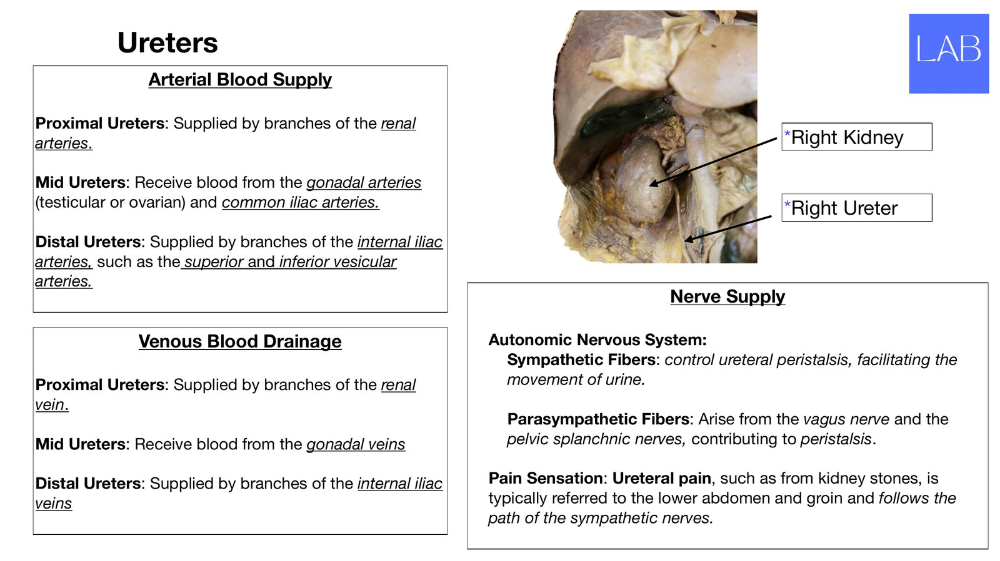
Ureters Arterial Blood Supply Proximal Ureters: Supplied by branches of the renal arteries. *Right Kidney Mid Ureters: Receive blood from the gonadal arteries (testicular or ovarian) and common iliac arteries. *Right Ureter Distal Ureters: Supplied by branches of the internal iliac arteries, such as the superior and inferior vesicular arteries. Nerve Supply Venous Blood Drainage Autonomic Nervous System: Sympathetic Fibers: control ureteral peristalsis, facilitating the Proximal Ureters: Supplied by branches of the renal movement of urine. vein. Parasympathetic Fibers: Arise from the vagus nerve and the Mid Ureters: Receive blood from the gonadal veins pelvic splanchnic nerves, contributing to peristalsis. Distal Ureters: Supplied by branches of the internal iliac Pain Sensation: Ureteral pain, such as from kidney stones, is veins typically referred to the lower abdomen and groin and follows the path of the sympathetic nerves.
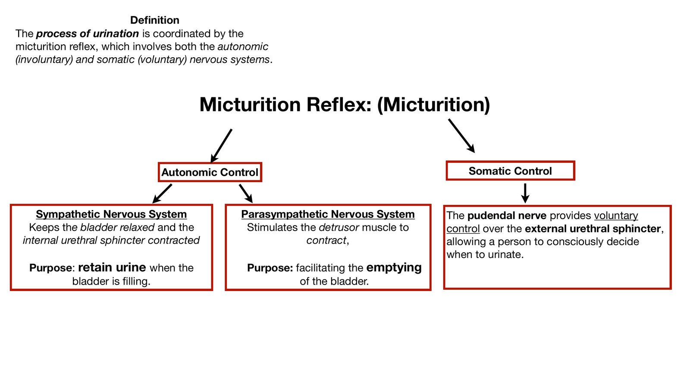
De nition The process of urination is coordinated by the micturition re ex, which involves both the autonomic (involuntary) and somatic (voluntary) nervous systems. Micturition Re ex: (Micturition) Autonomic Control Somatic Control Sympathetic Nervous System Parasympathetic Nervous System The pudendal nerve provides voluntary Keeps the bladder relaxed and the Stimulates the detrusor muscle to control over the external urethral sphincter, internal urethral sphincter contracted contract, allowing a person to consciously decide when to urinate. Purpose: retain urine when the Purpose: facilitating the emptying bladder is lling. of the bladder. fi fi fl fl
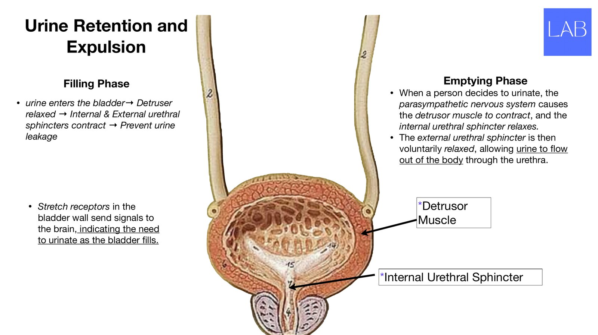
Urine Retention and Expulsion Filling Phase Emptying Phase • When a person decides to urinate, the • urine enters the bladder→ Detruser parasympathetic nervous system causes relaxed → Internal & External urethral the detrusor muscle to contract, and the sphincters contract → Prevent urine internal urethral sphincter relaxes. leakage • The external urethral sphincter is then voluntarily relaxed, allowing urine to ow out of the body through the urethra. • Stretch receptors in the *Detrusor bladder wall send signals to Muscle the brain, indicating the need to urinate as the bladder lls. *Internal Urethral Sphincter fi fl
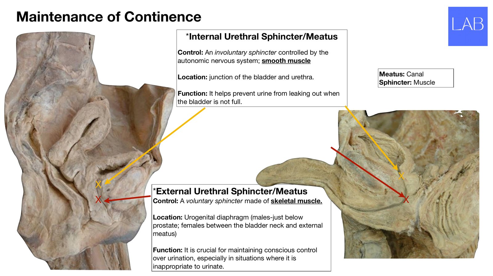
Maintenance of Continence *Internal Urethral Sphincter/Meatus Control: An involuntary sphincter controlled by the autonomic nervous system; smooth muscle Location: junction of the bladder and urethra. Meatus: Canal Sphincter: Muscle Function: It helps prevent urine from leaking out when the bladder is not full. X X *External Urethral Sphincter/Meatus X Control: A voluntary sphincter made of skeletal muscle. X Location: Urogenital diaphragm (males-just below prostate; females between the bladder neck and external meatus) Function: It is crucial for maintaining conscious control over urination, especially in situations where it is inappropriate to urinate.
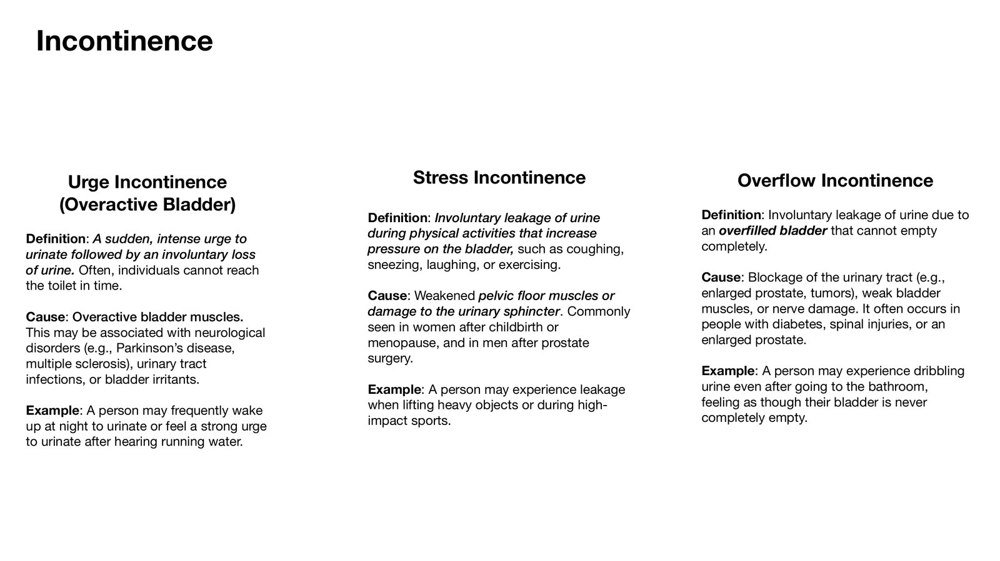
Incontinence Urge Incontinence Stress Incontinence Over ow Incontinence (Overactive Bladder) De nition: Involuntary leakage of urine due to De nition: Involuntary leakage of urine during physical activities that increase an over lled bladder that cannot empty De nition: A sudden, intense urge to pressure on the bladder, such as coughing, completely. urinate followed by an involuntary loss of urine. Often, individuals cannot reach sneezing, laughing, or exercising. Cause: Blockage of the urinary tract (e.g., the toilet in time. Cause: Weakened pelvic floor muscles or enlarged prostate, tumors), weak bladder damage to the urinary sphincter. Commonly muscles, or nerve damage. It often occurs in Cause: Overactive bladder muscles. seen in women after childbirth or people with diabetes, spinal injuries, or an This may be associated with neurological menopause, and in men after prostate enlarged prostate. disorders (e.g., Parkinson’s disease, multiple sclerosis), urinary tract surgery. Example: A person may experience dribbling infections, or bladder irritants. Example: A person may experience leakage urine even after going to the bathroom, when lifting heavy objects or during high- feeling as though their bladder is never Ex
Keep studying
Take it with you
Review the lecture
These slides
![QR code to the renal anatomy slides]()
Open the full deck on your phone.
Practice from memory
Study-question guide
![QR code to the renal anatomy study guide]()
Renal anatomy. Questions only.